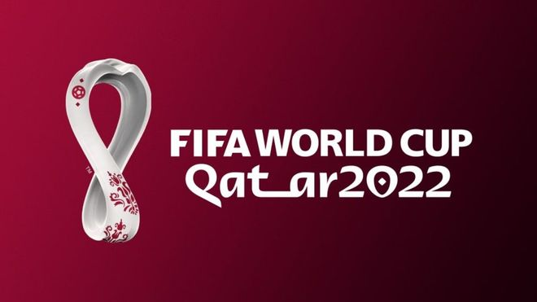

A un año de Qatar 2022
Por: Crisitan Gonzalez Fecha: Lunes 22 de noviembre de 2021
El 21 de noviembre del próximo año 2022 el árbitro pitará el comienzo del partido en el estadio Al Bayt, escenario de la gran inauguración del certamen más importante de selecciones que no ha dejado a nadie indiferente de polémicas.
Aunque la FIFA todavía no ha publicado información oficial al respecto, el organismo internacional dijo en declaraciones a Associated Press que la venta de entradas del Mundial de Qatar 2022 está programada para el próximo enero. La cuenta atrás tiene cada vez menos por recorrer.
Leer más....